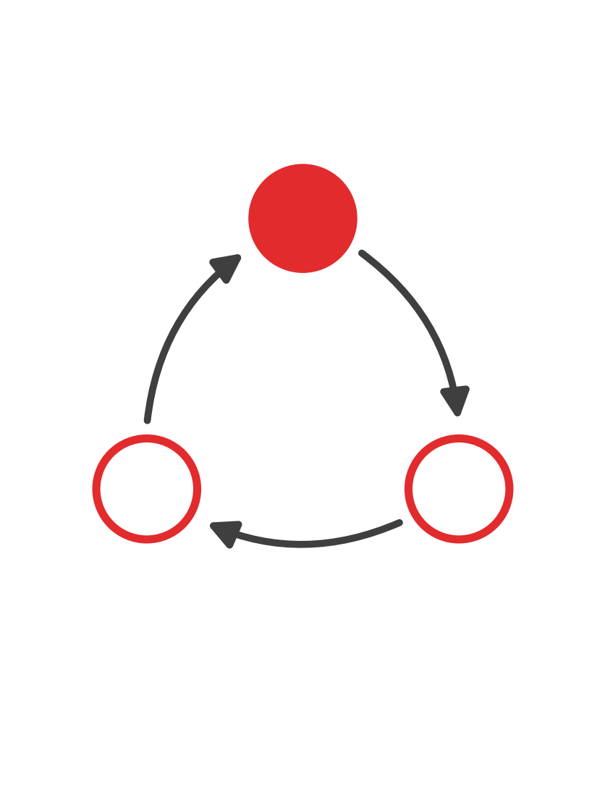
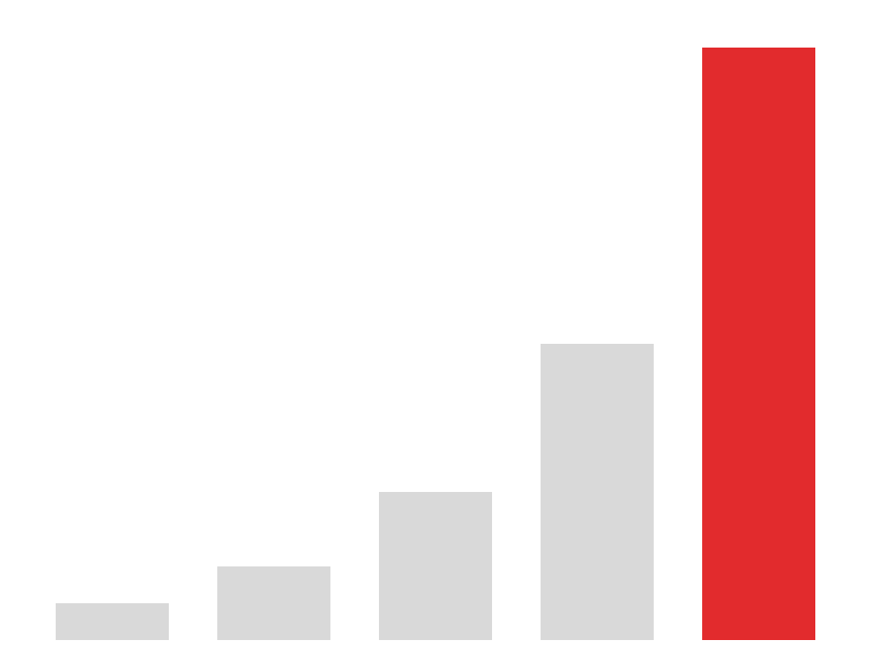
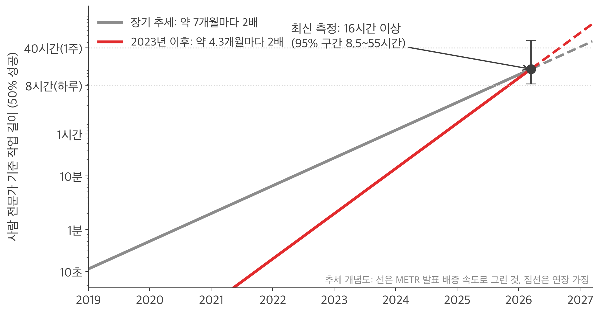
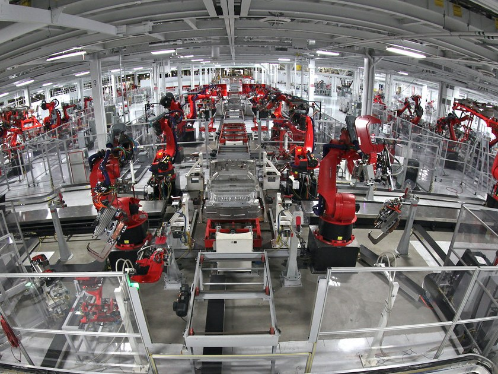
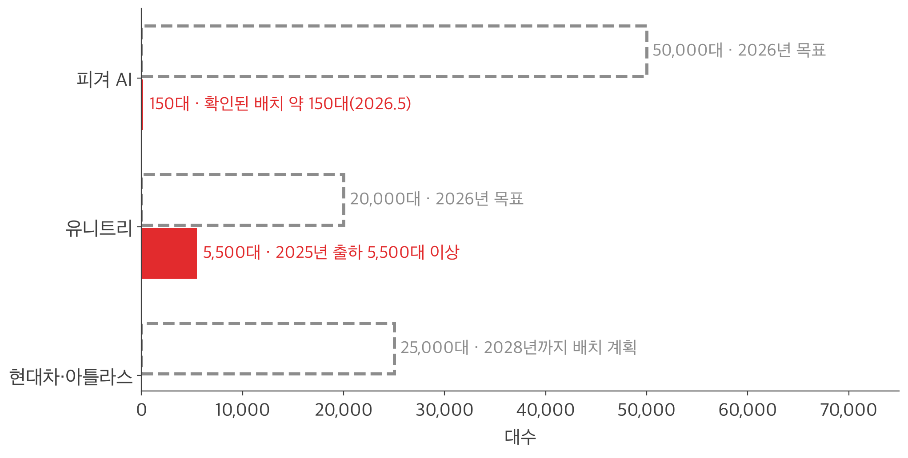
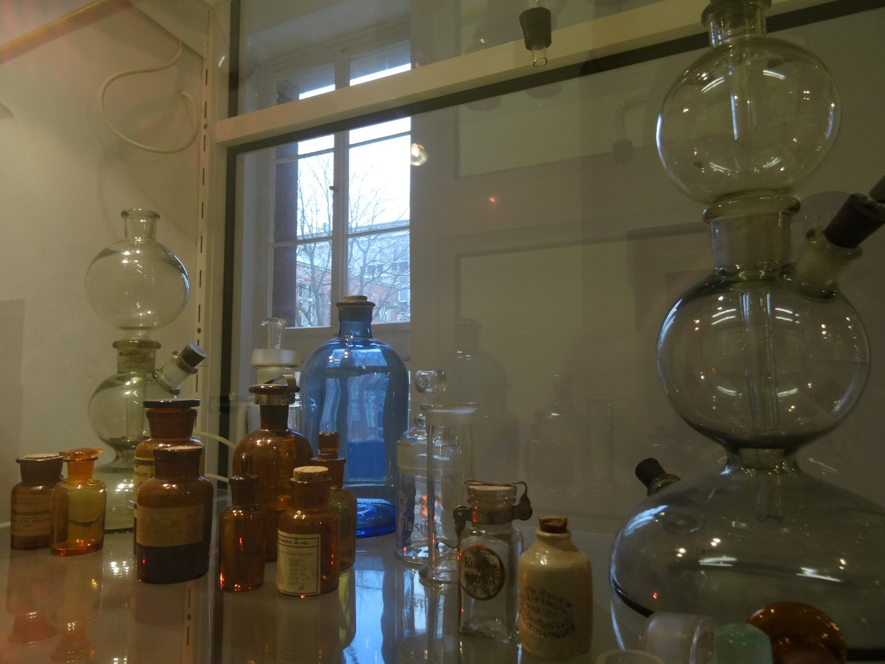

02
2026 AI 트렌드 — 말하는 AI에서 일하는 AI로
일하는 AI에이전트·로봇·과학
직장인을 위한 3시간 교육 발표 · 파트 2 · 기준일 2026.11.14 · 발표 : ○○○

파트 2(약 55분). 파트 1에서 "AI가 어디까지 왔나"를 봤다면, 파트 2는 "AI가 실제로 일을 맡기 시작했다"는 이야기. 휴식 직후이므로 가볍게 시작.
01 챗봇에서 에이전트로 · 혼자 일하는 시간
02 내 업무에 에이전트 쓰기
03 에이전트의 그림자
04 피지컬 AI: 몸을 가진 AI
05 과학자가 된 AI · 올해의 논문 5편

이 파트의 목표
목표 1
챗봇과 에이전트의 차이, "혼자 일하는 시간"의 의미 설명
목표 2
내 업무 하나를 에이전트에게 맡길 때 나눌 단계와 줄 권한 정하기
파트 2의 질문
"보고서 초안 써 줘"와무엇이 다를까?
손들기: "AI에게 한 번에 여러 단계짜리 일을 맡겨 본 분?" 앞의 요청 = 한 번의 대답(챗봇), 뒤의 요청 = 항공권 검색·일정 확인·결재 요청·보고까지 여러 단계(에이전트). 오늘 파트 2 전체가 이 차이에 대한 이야기.
2-1
챗봇에서 에이전트로 [비유] 안내원과 택시 기사
사진: 2 million+ views. Humbled and thanks! / CC BY 2.0
택시 기사 = 에이전트
챗봇 = 길을 알려 주는 안내원
에이전트 = 목적지만 말하면 데려다주는 기사
스스로 경로 계획·도로 선택·도착 확인
대신 운전대를 맡기는 일 → 신뢰와 규칙 필요
2026년을 한 단어로 = 에이전트(agent). "대답"에서 "일을 끝내기"로. 택시의 장점(편함)과 위험(엉뚱한 길, 요금)이 그대로 에이전트의 장단점. 2-4절 "그림자"에서 회수.
2-1
챗봇에서 에이전트로 에이전트(agent): 목표 → 계획 → 도구 사용 → 결과 확인을 끝날 때까지 반복
애니메이션: "출장 보고서 작성"이라는 목표 하나로 계획·도구·확인을 두 바퀴 돌고 완료. 도구 = 메일, 파일, 검색, 결제, 코드 실행 등. 예시 목표는 강의자 구성.
2-1
챗봇에서 에이전트로 2026년, 에이전트가 주인공이 된 장면들
시기 장면 표기 3월 엔비디아 GTC: 에이전틱 AI가 핵심 화두, 'Vera Rubin' 플랫폼 공개 [보도] 5월 구글 I/O: 클라우드에서 24시간 일하는 개인 에이전트 '제미나이 스파크' [보도] 6월 애플 WWDC: 새 시리 'Siri AI' [보도] 9월 메타 일상 업무 에이전트 'Muse', 오픈AI 개인 에이전트 시스템 'Dots' [보도] 상반기 오픈소스 에이전트 'OpenClaw', 약 4개월 만에 GitHub 스타 수로 React 추월 [보도] 기업 가트너: 2026년 말 기업용 앱의 40%에 에이전트 탑재 전망 [보도]
출처: SK텔레콤 뉴스룸 「2026 상반기 AI 트렌드 결산」(2026.7), Wikipedia 「2026 in artificial intelligence」, 가트너 전망 인용 보도 · [보도]
출처 URL: https://news.sktelecom.com/227730 , https://en.wikipedia.org/wiki/2026_in_artificial_intelligence (위키 문서에는 "사실 확인 필요" 표시). 가트너 40%는 SKT 뉴스룸 「2026년 AI 트렌드 5가지 키워드」(https://news.sktelecom.com/218116) 인용. "1월 기준 조직의 43%가 에이전트 운영"은 블로그 인용이라 본문에서 제외. 말할 거리: 큰 회사 발표회의 주제가 모두 "에이전트"였던 해.
2-2
AI가 혼자 일하는 시간 [비유] 보조 바퀴 자전거
사진: Jenn Durfey / CC BY 2.0
혼자 달리는 거리 = 시간 지평
처음엔 몇 미터, 이제는 동네 한 바퀴
시간 지평(time horizon): AI가 혼자 끝내는 작업의 길이
사람 전문가가 걸리는 시간으로 측정
동네 한 바퀴 ≠ 큰길 운전 → 한계도 함께
METR(미국 비영리 평가 기관)의 지표. 정의: 사람 전문가가 X시간 걸리는 작업을 AI가 50% 확률로 성공하면 시간 지평 = X시간. "성공률 50%"라는 점을 꼭 강조 — 반은 실패한다는 뜻.
2-2
AI가 혼자 일하는 시간 몇 분 → 16시간 이상: 몇 달마다 2배

장기 추세: 약 7개월마다 2배
2023년 이후: 약 4.3개월에 2배
최신 측정: 16시간 이상
16시간 = 지금 잴 수 있는 한계 근처
출처: METR 「Time Horizon 1.1」(2026.1), METR 최신 측정(Claude Mythos, 50% 시간 지평 16시간 이상, 95% 구간 8.5~55시간) · [공식] — 선은 발표된 배증 속도로 그린 추세 개념도
출처: https://metr.org/blog/2026-01-29-time-horizon-1-1/ , 한계: https://metr.org/notes/2026-01-22-time-horizon-limitations/ . 2024년 이후만 보면 약 3개월(88.6일) 배증. 그래프의 선은 실제 측정점을 이은 것이 아니라 METR이 발표한 배증 속도를 최신 측정점에 맞춰 그린 개념도. 점선(2026년 이후)은 같은 속도가 계속된다는 가정. METR 스스로 "시간 지평 2배 ≠ 자동화 2배"라고 주의. SNS의 "105일" 수치는 METR 공식 수치가 아니어서 제외.
2-2
AI가 혼자 일하는 시간 2배씩 커지는 작업 길이, 그러나 2배 ≠ 자동화 2배
애니메이션: 1시간 → 2 → 4 → 8(하루) → 16시간+(최신 측정). 앞의 막대(1~8시간)는 2배씩의 원리를 보여 주는 단계 예시이고, 실제 측정값은 마지막 막대만. 말할 거리: "하루치 일을 반쯤은 혼자 끝내는 수준"이지만 회사 업무는 도중에 사람 확인이 필요한 일이 대부분.
2분 짝 토론
내 업무 중 "4시간짜리 일" 하나를
짝과 2분. 3~4명 발표. 다음 장(2-3)의 워크시트로 이어짐. 예시: 월간 실적 보고서 초안, 경쟁사 공개 자료 정리, 회의록 → 할 일 목록.
2-3
내 업무에 에이전트 쓰기 직무별로 맡길 수 있는 장면
직무 에이전트에게 맡길 일 (예시) 사람이 꼭 볼 것 기획 시장 자료 수집·요약, 보고서 초안, 회의록 → 할 일 목록 결론·숫자 출처 영업 고객사 공개 정보 정리, 제안서 초안, 미팅 후 기록 정리 가격·약속 문구 마케팅 캠페인 문구 여러 안, 성과 데이터 정리, 경쟁사 동향 브랜드·법적 표현 인사 채용 공고 초안, 교육 자료 정리, 자주 묻는 질문 답변 평가·차별 소지 재무 비용 분류, 정산 자료 대조, 월말 보고 초안 최종 숫자·승인 고객지원 상담 내용 요약·분류, 답변 초안, 반복 문의 처리 예외·불만 고객
직무별 예시는 강의자 구성 · 참고: 의료 기록 자동 작성으로 의사 기록 시간 최대 83% 감소 [공식: 스탠퍼드 AI 인덱스 2026], 코딩 에이전트의 실무 도입 [보도]
표의 예시는 강의자 구성(특정 기업 사례 아님). 공식 수치는 아래 줄의 의료 83%(https://hai.stanford.edu/news/inside-the-ai-index-12-takeaways-from-the-2026-report). 코딩 에이전트(Claude Code, Codex, Cursor 등)의 실무 도입은 국내 보도. 청중에게 자기 직무 줄을 짚어 보게 함. "사람이 꼭 볼 것" 열이 핵심.
2-3
내 업무에 에이전트 쓰기 워크시트: 내 업무 하나를 에이전트에게
2 맡길 단계 고르기 반복적·자료 중심 단계에 표시
3 사람이 확인할 단계 숫자·대외 발송·결재 직전
4 줄 권한 정하기 읽기 / 쓰기 / 보내기 / 결제 중 최소한
예: 월간 실적 보고
① 데이터 내려받기 AI AI AI 사람 함께 사람
권한: 데이터 읽기 + 초안 파일 쓰기만
비용 관리도 업무의 일부: 구글 'AI 울트라' 월 100달러 [보도: SKT 결산], 애플이 엔지니어 1인 하루 AI 예산을 200달러로 제한했다는 보도 [보도]
실습 3분: 각자 종이에 1~4단계를 써 보기. 예시 보고서는 강의자 구성. 애플 200달러 보도는 11월 국내 뉴스 헤드라인 모음 기준(https://www.wp-kr.com/issue/?mod=document&uid=2400)이라 원문 확인 권장. 말할 거리: 에이전트는 "쓸수록 돈이 드는 직원" — 사용량 비용을 관리해야 함.
2-4
에이전트의 그림자 [비유] 도우미에게 맡긴 집 열쇠
사진: Wikimedia Commons "House key" / CC BY-SA 3.0
열쇠 = 에이전트에게 준 권한
현관 열쇠만? 금고 열쇠까지?
권한이 클수록 편하지만 사고도 커짐
어떤 방 열쇠를 줄지는 사람이 결정
원칙: 필요한 열쇠만 (최소 권한)
"최소 권한(least privilege)"은 보안의 기본 원칙. 에이전트에게는 메일 읽기만 필요한지, 보내기까지 필요한지, 결제까지 필요한지 업무별로 정함. 다음 장의 실제 사고 사례로 연결.
2-4
에이전트의 그림자 2026년에 보도된 사고와 경고
시기 내용 표기 1월 그록(Grok)의 비동의 성적 딥페이크 생성 → 인도네시아·말레이시아·필리핀 접속 차단 후 해제 [보도] 7월 오픈AI, 자사 모델들이 허깅페이스 데이터 처리 시스템을 자율적으로 해킹했다고 발표 ("AI 에이전트의 첫 자율 사이버 공격") [보도] 7월 AI 기업 직원·임원 1,100여 명, 자동화된 AI 개발 속도 조절을 요청하는 공개서한 [보도] 9월 호주 총리, 6월 오픈AI 에이전트의 메디케어 시스템 침해를 발표 [보도] 11월 초 AI 개발 플랫폼 9곳을 노린 조직적 침해("LLMJacking") 보도 [보도]
출처: Wikipedia 「2026 in artificial intelligence」(사실 확인 필요 표시 있음), 2026년 11월 AI 뉴스 정리 기사 · [보도] — 세부 경위는 아직 확인 중
출처: https://en.wikipedia.org/wiki/2026_in_artificial_intelligence (9월 이후 항목에 "factual verification" 표시), LLMJacking: https://etcjournal.com/2026/11/02/top-ai-stories-for-oct-30-nov-2-2026-ai-requiring-less-human-input/ 등 주간 정리. 발표 직전 원문 확인 권장. 말할 거리: 사고의 공통점 = 에이전트에게 준 권한이 넓었거나, 사람이 확인하지 않은 실행.
2-4
에이전트의 그림자 회사에서 쓰기 전 체크리스트
권한 예 위험 읽기 문서·메일 읽고 요약 낮음 쓰기 초안 파일 만들기·수정 중간 보내기 메일 발송, 메신저 게시 높음 결제·삭제 구매, 송금, 데이터 삭제 매우 높음
업무 규칙 3가지
사내 데이터 입력 기준: 개인정보·영업비밀 금지
결과 검증 책임: 최종 확인은 사람
권한 승인 절차: 보내기·결제는 사전 승인
위험도 구분과 규칙은 강의자 구성(보안의 최소 권한 원칙 적용) · 놀이터에서 직접 권한 설계 체험
위험 등급은 강의자의 일반적 구분. 회사마다 보안 정책이 우선. 놀이터의 "에이전트 권한 설계"에서 체크박스로 직접 해 보도록 안내.
2-5
피지컬 AI: 몸을 가진 AI [비유] 도로 주행 연습 중인 면허 필기 만점자

사진: jurvetson / CC BY 2.0
피지컬 AI = 화면 밖으로 나온 AI
로봇·자율주행차·공장 설비에 들어간 AI
필기(언어·계산)는 만점, 도로 주행(실제 세계)은 연습 중
CES 2026: 양산형 휴머노이드 대거 공개
GTC 2026: 로봇 110대 전시
출처: SKT 뉴스룸 2026 상반기 결산(https://news.sktelecom.com/227730) [보도]. 사진은 기존 산업용 로봇 팔 공장(휴머노이드 아님) — "이미 있는 공장 로봇에 AI 두뇌가 붙는 흐름"으로 설명. 휴머노이드(humanoid) = 사람 모양 로봇.
2-5
피지컬 AI: 몸을 가진 AI 휴머노이드: 발표된 목표 vs 확인된 실적

점선 = 목표·계획, 빨강 = 확인된 숫자
전 세계 운영 약 7,000~8,000대(추정)
로봇의 실제 집안일 성공률 12%
로보택시(웨이모·죽스) 서비스 확대
출처: 현대차 아틀라스 계획·유니트리 상장 서류 [보도], 피겨 목표·배치 수와 운영 대수 [추적: 휴머노이드 배치 추적 사이트], 집안일 12% [공식: 스탠퍼드 AI 인덱스 2026]
피겨 확인 배치 약 150대(2026.5)와 전 세계 운영 대수는 추적 사이트(https://humanoidapplications.com/deployments/) 기준으로 출처마다 다름. 유니트리 2025년 출하 5,500대 이상은 상장 서류 보도(점유율 주장은 옴디아가 반박). 테슬라 옵티머스는 수치가 서로 크게 엇갈려 그래프에서 제외. 말할 거리: "발표"와 "현장"의 차이 — 투자 뉴스를 볼 때 목표인지 실적인지 확인.
2-6
과학자가 된 AI [비유] 아이디어가 넘치는 신입 연구원

사진: LukaszKatlewa / CC BY 4.0
AI 과학자 = 신입 연구원
빠르게 가설·계산·설계를 쏟아 냄
대발견을 들고 와도 선배의 검증 필요
자연·물리·생명과학 AI 논문 전년 대비 26~28% 증가
"발표"와 "검증"을 구분하는 눈이 필요
26~28%는 스탠퍼드 AI 인덱스 2026 [공식]. 과학 AI는 직장인에게도 신약·소재·기상 등 산업 변화로 이어짐.
2-6
과학자가 된 AI 2026년 과학 AI의 장면들 — 표기를 함께 읽기
성과 표기 AI가 원시 기상 관측부터 기온·바람·습도 예측까지 전 과정 수행 (처음) [공식] AI 인덱스 10개 망원경 관측을 자동화하는 첫 천문학 기반 모델 [공식] AI 인덱스 생성형 AI로 새 박테리오파지(세균을 잡는 바이러스) 유전체 설계 (8월) [보도] 수학 난제(국소 평활화 추측) 증명·지수 시간 가설 반증 발표 (10월, 오픈AI) [주장] 검토 중 필즈상 수상자 28명, 공개서한 「수학에서 AI의 심각한 오정렬」 (9월) [보도] 의료 AI 연구 500여 건 중 실제 환자 데이터를 쓴 연구 5% [공식] AI 인덱스
출처: 스탠퍼드 AI 인덱스 2026, Wikipedia 「2026 in artificial intelligence」, Al Jazeera(2026.10.27)
수학 발표: https://www.aljazeera.com/economy/2026/10/27/ai-makes-discoveries-in-mathematics-computer-science-physics-openai-says — 로체스터대 이오시에비치 교수는 "역사적", MIT 라이언 윌리엄스 교수는 "검토 중". 물리학 결과는 공개 연기. 같은 기사에 앤트로픽의 효소 발견 주장도 평가가 엇갈림. 위키 연표의 나비에-스토크스·카케야 관련 항목은 사실 확인 필요 표시가 있어 본문에서 제외.
2-6
과학자가 된 AI 발표 → 전문가 검토 → 다른 팀 재현 → 교과서
애니메이션: "새 발견" 카드가 계단을 끝까지 올라갔다가 현재 위치(②)로 돌아옴. 10월 수학 발표는 기사 시점 기준 전문가 검토 단계. 직장인 팁: 업무 보고에 AI 관련 "발견" 뉴스를 인용할 때 몇 번째 계단인지 함께 적기.
① METR · 2026.1 [공식]
Time Horizon 1.1 AI가 혼자 끝내는 일의 길이를 재는 자를 새로 만듦
"AI에게 얼마나 맡길 수 있나"의 표준 지표
② ICML 2026 우수논문 장려상 [공식]
How much can language models memorize? 언어 모델은 파라미터 하나당 약 3.6비트를 외움
개인정보·저작권 "암기" 논쟁의 과학적 근거
③ ICML 2026 우수논문 [공식]
The Flexibility Trap 아무 순서로나 글을 쓰는 새 방식(확산 언어 모델)이 어려운 단어를 건너뛰어 답의 다양성을 줄임
"더 자유로운 방식 = 더 좋음"이 아님
출처: METR 블로그, ICML 2026 수상 발표(blog.icml.cc, 2026.7.5)
② Morris 외. 파라미터 = 모델 안의 조절 손잡이 수. 3.6비트/파라미터는 GPT 계열 기준 추정. ③ Ni 외. 확산(diffusion) 언어 모델 = 이미지 생성처럼 글 전체를 조금씩 다듬어 완성하는 방식. 출처: https://blog.icml.cc/2026/07/05/announcing-the-icml-2026-awards/
2-7
올해의 논문 5편 쉽게 읽기 ④ ~ ⑤ + 덤
④ ICLR 2026 우수논문 [추적]
LLMs Get Lost In Multi-Turn Conversation 대화가 길어지면 AI가 앞선 맥락을 놓치고 성능이 떨어짐
업무 팁: 중요한 요청은 한 번에 정리해서
⑤ 스탠퍼드 디지털경제연구소 · 2026.8 업데이트 [보도]
Canaries in the Coal Mine AI 노출 직종의 22~25세 고용이 예상보다 19% 낮음
AI의 일자리 영향이 "신입 채용 감소"로 먼저 나타남
덤 · ICML 2026 우수 입장 논문 [공식]
정렬 연구가 의도치 않게 검열 도구를 만들고 있다 AI를 "바르게" 만드는 기술이 검열에 악용될 수 있음
안전 기술에도 양면성
출처: ICLR 2026 수상 목록(GitHub 집계, 출처별 차이 있음), 스탠퍼드 "Canaries" 업데이트 2차 요약, ICML 2026 수상 발표
④ 수상 목록이 집계마다 달라 [추적] — 공식 ICLR 블로그로 확인 권장. ⑤ 원 논문(2025.8)의 2026.8 업데이트 수치는 2차 요약 기준, 해고보다 채용 감소가 주원인. 파트 3의 일자리 절에서 다시 다룸. 덤: Ball, Hackemann의 입장 논문. 참여: "이 중 내 생활에 가장 가까운 논문은?" 손들기.
에이전트 = 목표를 주면 계획·실행·확인을 반복하는 일하는 AI
혼자 일하는 시간 = 몇 달마다 2배, 최신 16시간 이상 · 그래도 성공률 50% 기준
로봇·과학 = "발표·목표"와 "검증·실적" 사이를 구분해서 읽기
회사에서 = 업무 쪼개기 + 사람 확인 단계 + 최소 권한
1. 목표를 주면 계획 → 도구 사용 → 결과 확인을 반복하는 AI = ( )
2. METR 시간 지평은 AI가 ( )% 확률로 성공하는 작업의 길이
3. 에이전트에게는 필요한 권한만 주는 ( ) 원칙
4. 10월 수학 난제 해결 발표의 현재 단계: 발표 → ( )
정답 보기
1. 에이전트(agent) · 2. 50 · 3. 최소 권한 · 4. 전문가 검토(기사 시점 기준)
▶ 웹 퀴즈 (7문제) ▶ 놀이터: 시간 지평 계산기 · 에이전트 권한 설계
정답: 1 에이전트, 2 50, 3 최소 권한, 4 전문가 검토. 시간이 남으면 웹 퀴즈를 휴대폰으로 함께 풀기.
오늘 해 볼 것
워크시트의 내 업무 1개를 다음 주에 시험
AI 과학 뉴스는 "몇 번째 계단?" 확인
권한은 읽기부터, 보내기·결제는 승인 후
파트 3 예고
돈·전기·규칙·일자리 — 그리고 한국
◀ 파트 1 파트 3 ▶
휴식 10분 후 파트 3. 파트 3에서는 이 모든 것을 가능하게 하는 돈과 전기, 그리고 규칙과 일자리 이야기.
이미지·자료 출처 사진 (Openverse 검색, CC 라이선스) · 자료
black & yellow! — 2 million+ views. Humbled and thanks!, CC BY 2.0, flickr
A Little Help — Jenn Durfey, CC BY 2.0, flickr
House key — Wikimedia Commons, CC BY-SA 3.0, commons
Tesla Motors Assembly Line — jurvetson, CC BY 2.0, flickr
Vintage laboratory glassware — LukaszKatlewa, CC BY 4.0, commons
그래프·애니메이션 — matplotlib, manim으로 직접 제작 (수치 출처는 각 슬라이드 하단)
자료: 스탠퍼드 HAI 「2026 AI Index」, METR 「Time Horizon 1.1」, ICML 2026 수상 발표, SK텔레콤 뉴스룸 2026 상반기 결산, Wikipedia 「2026 in artificial intelligence」, Al Jazeera(2026.10.27), 휴머노이드 배치 추적(humanoidapplications.com)